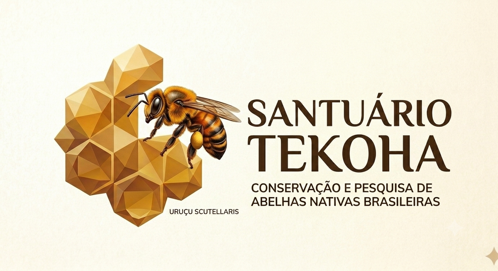

Como registrar árvores melíferas e enxames de abelhas nativas do santuário com padrão científico — para que cada observação vire dado comparável com a pesquisa brasileira.
Valem para qualquer registro em campo, seja de planta ou de abelha. São eles que separam uma anotação particular de um dado de pesquisa.
Toda ficha exige uma foto do alvo no contexto (vizinhas, trilha, pedra, terreno). O GPS erra 3–10 m no mato fechado; a foto do entorno é o que fecha a reidentificação depois.
ObrigatóriaCoordenada de enxame silvestre é informação sensível — meliponíneo nativo sofre saque para venda ilegal de colônia. Todo registro carrega um nível de sigilo. Ver a seção Sigilo.
InegociávelUsamos as mesmas réguas de Embrapa e universidades — escala de Fournier para floração, recurso floral (néctar/pólen/resina) e as espécies do catálogo nacional. Dado padronizado é dado publicável.
ComparávelA árvore tem dois momentos: o cadastro (uma vez, quando planta ou encontra o indivíduo) e a observação (cada visita, para acompanhar floração e visita de abelhas). O cruzamento floração × abelha é o coração da pesquisa.
| Campo | Como preencher | |
|---|---|---|
| Espécie | autocompletar filtrando pelo catálogo — sistema poderá sugerir por referência + IA (a definir) | obrig. |
| Nome popular | texto | |
| Data de plantio ou de registro | data — se for árvore já existente encontrada, usar a data do registro | obrig. |
| Origem da muda | própria / doada / viveiro / regeneração natural | |
| Foto inicial + entorno | 2 fotos | obrig. |
| Status | vivo / morto | obrig. |
| Campo | Valores | |
|---|---|---|
| Altura est. / DAP | número (m) / diâmetro (cm) | |
| Fenofase | botão · flor · fruto verde · fruto maduro · dispersão · vegetativo | obrig. |
| Intensidade | escala de Fournier 0–4 (ver seção 03) | obrig. |
| Recurso ofertado | néctar · pólen · resina/própolis | |
| Abelhas visitando? | sim / não | obrig. |
| Espécie(s) de abelha | catálogo de espécies (seção 06) — texto livre no MVP | |
| Hora da observação | automática — pico de visita costuma ser 8h–12h | |
| Estado da planta | saudável / estressada / doente / danificada |
Ao registrar a floração (ou frutificação), o pesquisador olha a copa e escolhe quanto por cento dela está naquela fase. É a régua-padrão da fenologia brasileira (Fournier, 1974). No app, é só um toque de 0 a 4.
Registro de ninho de abelha sem ferrão encontrado na natureza. O vocabulário de estado da colônia segue a ficha de manejo do Prof. Dr. Rogério Alves (INSECTA/UFRB), adaptada do ninho de caixa para o ninho silvestre. Todo enxame já entra marcado como restrito automaticamente — a coordenada exata fica visível só para pesquisador logado, sem depender de ninguém lembrar de proteger. Tornar público exige uma ação consciente (ver seção 05).
| Campo | Valores | |
|---|---|---|
| Espécie | catálogo de espécies (seção 06) — texto livre no MVP | obrig. |
| Substrato / hospedeira | oco de árvore · raiz · cupinzeiro · barranco · muro · chão · outro | obrig. |
| Altura do ninho | número (m) | |
| Entrada do ninho | tubo, cor, formato — texto + foto | |
| Estado da colônia | ativa forte · ativa fraca · abandonada · morta | obrig. |
| Atividade de voo | intensa · moderada · baixa · nenhuma | |
| Ameaça observada | sinal de saque · desmatamento · forídeo/praga · nenhuma | |
| Sensibilidade | restrito (padrão) · ofuscado — nunca público | obrig. |
Publicar a localização de um ninho nativo entrega o ninho ao pilhador. Por isso todo registro carrega um nível de sensibilidade que decide como (e se) o ponto aparece no mapa público.
Exibição normal no mapa do santuário. É o caso das árvores plantadas, que têm plaquinha e são parte do roteiro de visita.
No mapa público o ponto aparece deslocado num raio de 1–5 km — mostra que a espécie existe na região sem entregar o ponto exato. Técnica usada pelo iNaturalist para espécie ameaçada.
Coordenada exata só para pesquisador logado. Padrão de todo enxame silvestre. Não aparece no mapa público de forma alguma.
Lista de espécies do catálogo nacional relevantes para a meliponicultura, base para identificação em campo e para o campo "espécie" das fichas. O acervo com foto de entrada de ninho de cada espécie está arquivado em Referencias/Fichas-Abelhas/. No app, o preenchimento da espécie será assistido: o sistema sugere candidatos a partir deste catálogo e, futuramente, por IA sobre a foto do registro.
Toda a metodologia deste guia é apoiada em material de pesquisa público. Registramos aqui a fonte de cada peça, com o devido crédito a quem a produziu.
A.B.E.L.H.A. — Associação Brasileira de Estudo das Abelhas, em parceria com o ICMBio. Fichas catalográficas das espécies de abelhas sem ferrão relevantes para a meliponicultura. Coordenação geral: Cristiano Menezes. Informações técnico-científicas: Denise de Araújo Alves. Colaboração da Embrapa Meio Ambiente e da USP. Base: Catálogo Nacional das Espécies de Abelhas Sem Ferrão (Portaria ICMBio nº 665/2021). Disponível em: abelha.org.br
ALVES, R. M. O.; CARVALHO, C. A. L.; SOUZA, B. A.; JUSTINA, G. D. Sistema de produção para abelhas sem ferrão: uma proposta para o Estado da Bahia. Cruz das Almas: UFBA / SEAGRI-BA, 2005. (Série Meliponicultura, n. 3). Grupo INSECTA — Núcleo de Estudo dos Insetos. Disponível em: www2.ufrb.edu.br/insecta
FOURNIER, L. A. Un método cuantitativo para la medición de características fenológicas en árboles. Turrialba, v. 24, n. 4, p. 422–423, 1974.
EMBRAPA Meio-Norte. Flora Apícola. embrapa.br/meio-norte/flora-apicola · Rede Sem Abelha, Sem Alimento. Guia de plantas visitadas por abelhas na Caatinga. · IFMG — Campus Bambuí. Calendário Apícola.
Documento interno de campo do Santuário Tekoha — Conservação e Pesquisa de Abelhas Nativas Brasileiras, para o santuário em Sergipe. Este guia organiza e adapta o material das fontes acima; os créditos de cada peça pertencem aos respectivos autores e instituições. As fichas catalográficas de abelhas são distribuídas gratuitamente pela A.B.E.L.H.A./ICMBio para fins de educação e conservação.